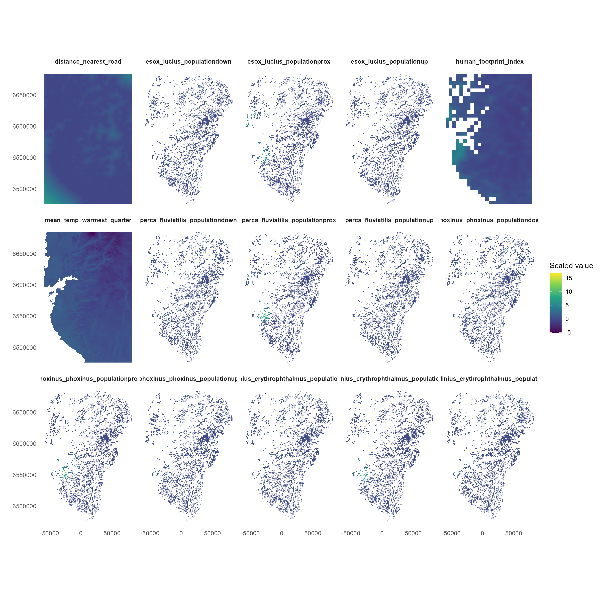

| Species | eDNA | GBIF | Total |
|---|---|---|---|
| Esox lucius | 10 | 13 | 23 |
| Perca fluviatilis | 11 | 7 | 18 |
| Phoxinus phoxinus | 12 | 5 | 17 |
| Scardinius erythrophthalmus | 5 | 18 | 23 |
Modelling the Distribution of Invasive Fish Species
An Integrated Analysis of eDNA and GBIF Occurrence Data
1 Introduction
Four fish species were considered:
- Esox lucius (northern pike),
- Perca fluviatilis (European perch),
- Phoxinus phoxinus (Eurasian minnow), and
- Scardinius erythrophthalmus (common rudd). 2 Preparing data
2.1 Occurrence data
Two complementary data sources were used:
- environmental DNA (eDNA) data, processed as presence–absence observations, and
- occurrence records obtained from the Global Biodiversity Information Facility (GBIF).
We summarise the number of occurrence records for each fish species in the eDNA and GBIF datasets are presented in Table 1. There are very few data used available for the modelling, witha maximum of 23 occurrence records and minimum of 17 records.
2.2 Covariates
To predict the occurrence probability, we obtained a set of covariates to use for the modelling:
- Mean temperature for the warmest quarter (
mean_temp_warmest_quarter) - Human footprint index (
human_footprint_index) - Distance to the nearest road (
distance_nearest_road) - Species specific population proximity (
_ _populationprox) - Species specific population up (
_ _populationup) - Species specific population down (
_ _populationdown)

The distribution of the predictors are presented in Figure 1.